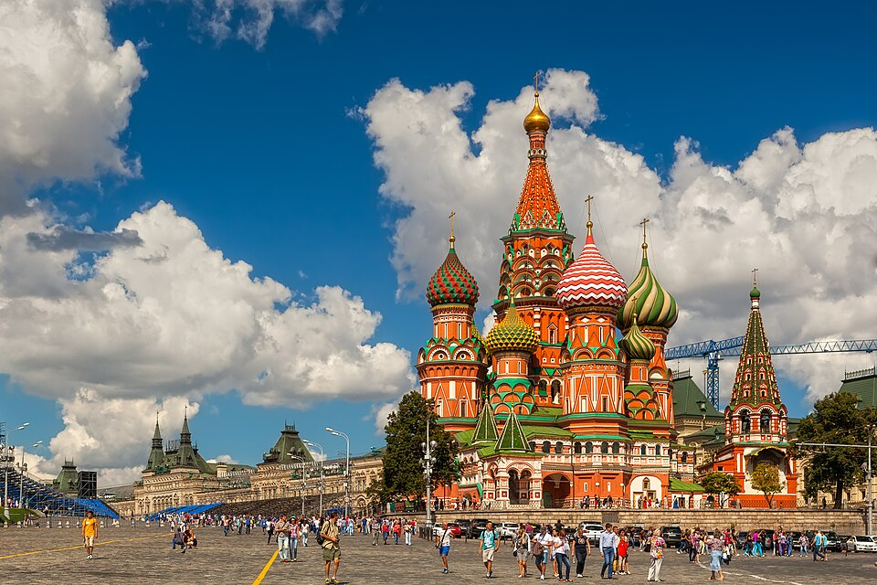
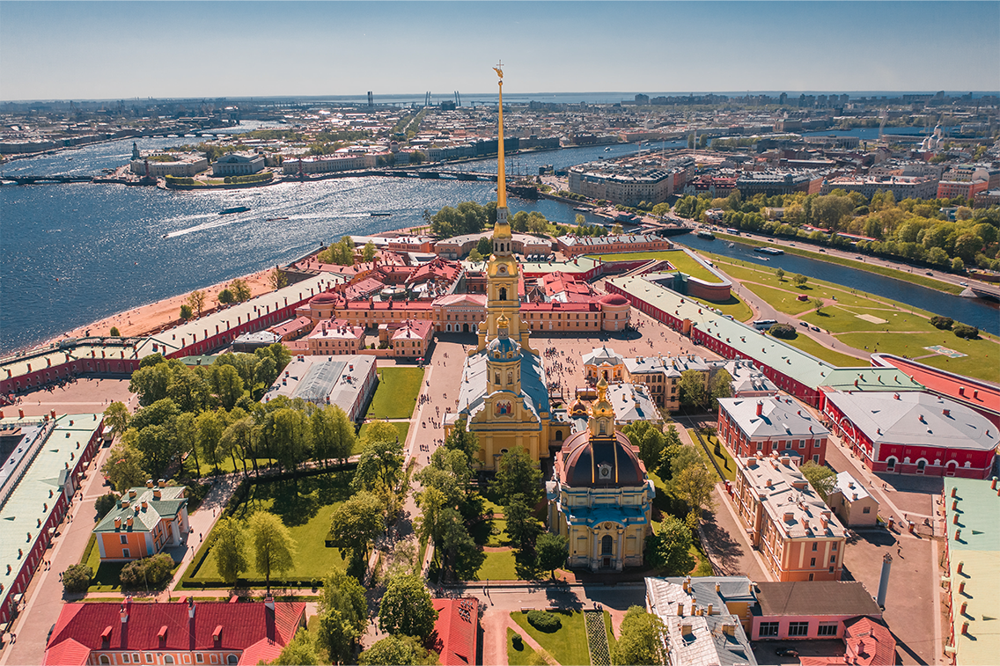
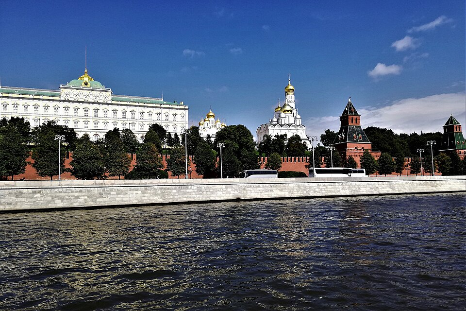

圣彼得堡
从一份参考路线开始，把想去的地方排进自己的每一天。
用自己的节奏，遇见更真实的俄罗斯


两座城市分别保存行程
选择天数与出发日期，自由编辑，打造专属于你的俄罗斯之旅。
挑选想去的景点，在地图下方加入当天。
正在加载当天地图…
加入想去的地方，就能在这里看到当天路线。
可以调整顺序，留点时间慢慢走。
相近地点可串联步行；每段都可选择步行或公交／地铁。
参考路线可自由调整。演出、开放日期和季节项目，请在出发前确认。
让同行的人一起看到你的俄罗斯故事。
“旅行不只是到达，而是按自己的节奏，看见更大的世界。”— 去俄看看
把这份路线发给同行的人，打开链接即可一起查看。
扫描二维码打开这份行程。
请启用页面脚本，选择城市、景点和编辑行程。也可以直接在地图中搜索圣彼得堡或莫斯科的地点。